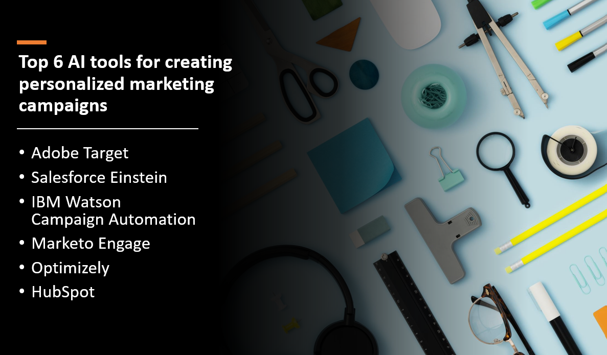

Introduction
Personalized marketing campaigns have become essential for businesses to engage customers and deliver tailored experiences that resonate with individual preferences. Artificial Intelligence (AI) tools offer powerful capabilities to analyze customer data, generate insights, and automate marketing processes for personalized campaigns. In this blog post, we will explore the top six AI tools for creating personalized marketing campaigns, enabling businesses to deliver targeted and impactful marketing messages.
- AI tools enable personalized recommendations and tailored content.
- Personalized marketing campaigns generated by AI tools drive higher engagement rates.
- AI tools optimize marketing spend by targeting the right audience, improving ROI.
- AI automates the process of analyzing data and generating personalized content.
Here's Our Top 6 AI tools for creating personalized marketing campaigns:
1: Adobe Target
Overview and Importance
Adobe Target is a powerful AI tool used for creating personalized marketing campaigns. It enables marketers to deliver tailored experiences to their customers by leveraging AI algorithms and advanced targeting capabilities. With Adobe Target, businesses can optimize customer engagement, increase conversion rates, and enhance overall marketing effectiveness.
Learn more about Adobe Target
Key Features and Capabilities
Automated Personalization
- Adobe Target uses machine learning to analyze customer data and deliver personalized experiences in real-time based on behavior, preferences, and historical data.
A/B Testing and Optimization
- The tool enables marketers to conduct A/B tests and multivariate experiments, comparing content variations to optimize marketing campaigns and drive customer engagement and conversions.
Advanced Segmentation and Targeting
- Adobe Target enables marketers to create personalized experiences for specific customer segments through sophisticated segmentation capabilities, targeting criteria such as visitor type, customer loyalty, and prospect value.
2: Salesforce Einstein
Overview and Importance
Salesforce Einstein is a leading AI tool that empowers businesses to create personalized marketing campaigns. Built on the Salesforce platform, Einstein leverages advanced machine learning algorithms and data analytics to deliver tailored experiences and drive customer engagement. It enables marketers to leverage the power of AI to understand customer behavior, predict their needs, and deliver relevant content and offers.
Learn more about Salesforce Einstein
Key Features and Capabilities
Predictive Analytics
- Salesforce Einstein leverages predictive analytics to analyze customer data and optimize marketing strategies based on valuable insights and predictions.
Personalization and Recommendations
- Personalized recommendations and content suggestions optimize customer engagement and conversion rates through targeted, tailored offers based on behavior and preferences.
Journey Orchestration
- Salesforce Einstein empowers marketers to automate personalized customer journeys, delivering the right message at the right time to drive desired outcomes and enhance customer satisfaction.
3: IBM Watson Campaign Automation
Overview and Importance
IBM Watson Campaign Automation is a powerful AI tool designed to help businesses create personalized marketing campaigns. It leverages the capabilities of IBM Watson, a leading AI platform, to analyze customer data, understand customer behavior, and deliver targeted marketing communications. With Watson Campaign Automation, businesses can automate and optimize their marketing efforts, driving customer engagement and enhancing overall campaign effectiveness.
Learn more about IBM Watson Campaign Automation
Key Features and Capabilities
Customer Segmentation
- Segment your customer base using advanced AI algorithms to personalize marketing campaigns based on specific demographics, behaviors, and preferences.
Behavioral Tracking and Analytics
- The tool empowers marketers with advanced tracking and analytics for data-driven decision-making and improved targeting and engagement.
Automated Campaigns
- Watson Campaign Automation automates marketing workflows, enabling personalized messages based on customer actions, fostering timely and relevant communication.
4: Marketo Engage
Overview and Importance
Marketo Engage is a leading AI tool for creating personalized marketing campaigns. It provides marketers with a comprehensive platform to automate and optimize their marketing efforts, driving customer engagement and conversion.
Learn more about Marketo Engage
Key Features and Capabilities
Multi-channel Campaign Management
- Create and manage personalized campaigns across various channels, including email, social media, web, and mobile.
Lead Scoring and Nurturing
- Identify and prioritize high-quality leads using AI-powered lead scoring algorithms, and nurture them with targeted content and communications.
Marketing Analytics
- Gain deep insights into campaign performance, customer behavior, and ROI through advanced analytics and reporting capabilities.
5: Optimizely
Overview and Importance
Optimizely is a powerful AI tool for creating personalized marketing campaigns. It enables businesses to deliver tailored experiences to their customers, optimize conversion rates, and maximize revenue.
Learn more about Optimizely
Key Features and Capabilities
Experimentation and A/B Testing
- Conduct controlled experiments and A/B tests to evaluate different campaign variations and determine the most effective ones.
Personalization and Targeting
- Leverage AI algorithms to deliver personalized content, offers, and recommendations based on user behavior, preferences, and segmentation.
- Measure and analyze campaign performance in real-time, track key metrics, and gain insights to optimize marketing strategies and drive better results.
6: HubSpot
Overview and Importance
HubSpot is a widely used AI tool for creating personalized marketing campaigns. It provides a comprehensive suite of marketing automation tools that help businesses attract, engage, and delight their customers.
Learn more about HubSpot
Key Features and Capabilities
CRM Integration
- Seamlessly integrate with customer relationship management (CRM) systems to leverage customer data and deliver personalized experiences.
Lead Nurturing and Segmentation
- Automate lead nurturing workflows and segment your audience based on various criteria to deliver targeted and relevant content.
Email Marketing and Automation
- Create and automate personalized email marketing campaigns, including personalized content, dynamic email elements, and behavior-triggered emails.
Conclusion
AI tools have significant importance in creating personalized marketing campaigns that resonate with individual customer preferences. The top six AI tools for personalized marketing campaigns are Adobe Target, Salesforce Einstein, IBM Watson Campaign Automation, Marketo Engage, Optimizely, and HubSpot.
Here are their key features, capabilities, and advantages:
Adobe Target: Offers advanced targeting and personalization capabilities, allowing businesses to deliver tailored experiences across various channels.
Salesforce Einstein: Utilizes AI to provide intelligent recommendations and personalized content, enhancing customer engagement and driving conversions.
IBM Watson Campaign Automation: Leverages AI-powered analytics and customer segmentation to deliver personalized marketing campaigns at scale.
Marketo Engage: Provides automation and personalization features, enabling businesses to optimize customer journeys and deliver targeted content.
Optimizely: Offers experimentation and personalization capabilities, allowing businesses to test and optimize marketing campaigns based on customer behavior.
HubSpot: Provides tools for creating personalized content, automation, and customer segmentation, facilitating targeted and impactful marketing campaigns.
Personalized marketing campaigns have a significant impact on customer experiences, brand loyalty, and business growth:
Customer experiences: Personalized campaigns create relevant and tailored experiences, improving customer satisfaction and engagement.
Brand loyalty: By delivering personalized messages and offers, businesses can foster stronger connections with customers, leading to increased brand loyalty.
Business growth: Personalized marketing campaigns drive higher conversion rates, customer retention, and overall business growth.
Businesses are encouraged to leverage these AI tools and technologies to deliver targeted and impactful marketing campaigns. By utilizing AI-powered personalization, businesses can create relevant and engaging experiences that resonate with individual customer preferences. This approach enhances customer satisfaction, builds brand loyalty, and drives business growth in a highly competitive market.